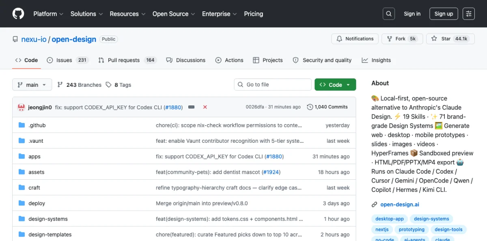
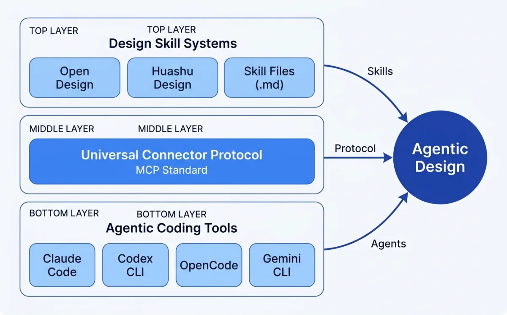
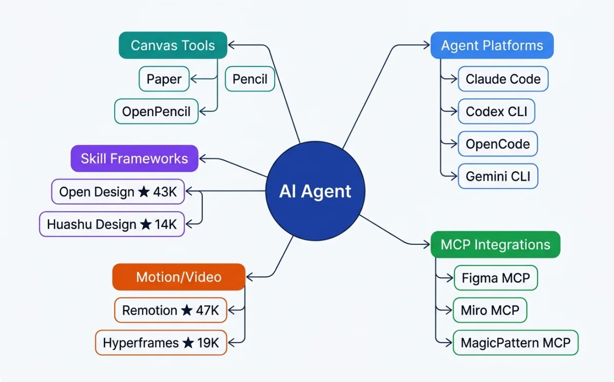

The Shift from GUI to Agent
For a decade, the design workflow looked the same. Open Figma or Sketch. Use a mouse-driven GUI to place elements on a canvas. Export static images or specs. Hand off to engineering. Engineering interprets the design, writes code, and ships something that approximates the original intent.

That loop worked. It still works. But it has a structural problem: the design artifact and the production artifact are two different things. A Figma file is not a website. A Sketch mockup is not a component library. Every handoff introduces translation loss. The designer describes a hover state. The engineer implements a different one. The designer specifies a 12px gap. The engineer uses 16px because it looked better in code. Small divergences accumulate into a final product that only loosely resembles the original design.
AI coding agents change this equation. An agent can read a design file, generate code from it, write HTML back to a canvas, and iterate on visual output --- all without leaving the terminal. The design artifact and the production artifact converge toward the same thing.
Consider what the four major agent platforms can do as of May 2026:
| Platform | Maker | Core capability | Key differentiator |
|---|---|---|---|
| Claude Code | Anthropic | Agentic coding across terminal, IDE, desktop, web | Richest skill system, most mature MCP support |
| Codex CLI | OpenAI | Cloud-based agent running tasks in isolated sandboxes | Parallel task execution, citation-backed output |
| OpenCode | Open source | Multi-provider agent with 75+ LLM options | 160K GitHub stars, cross-compatible with Claude Code conventions |
| Gemini CLI | Terminal agent with 1M-token context window | Free tier with 6K code requests/day |
These tools were built for software engineering. But their capabilities --- reading files, editing code, running commands, connecting to external tools --- map directly onto design tasks. The distinction between "coding agent" and "design agent" is eroding fast.
Claude Code describes itself as "an agentic coding tool that reads your codebase, edits files, runs commands, and integrates with your development tools" (source: Claude Code Overview, retrieved 2026-05-18). The critical word is agentic. It does not suggest. It does. It reads a design file, generates a visual artifact, and writes it to a canvas --- as an action, not a recommendation.
OpenAI frames the same shift differently: "We imagine a future where developers drive the work they want to own and delegate the rest to agents" (source: Introducing Codex, retrieved 2026-05-18). Replace "developers" with "designers" and the sentence holds. The agent handles the translation between intent and artifact.
OpenCode, the open-source entry with 160K GitHub stars and 7.5M monthly developers (source: OpenCode, retrieved 2026-05-18), takes the broadest approach. It supports 75+ LLM providers, making it accessible regardless of which model you prefer. Its cross-compatibility with Claude Code conventions means design skills transfer between platforms without modification. Gemini CLI rounds out the field with a 1M-token context window and a free tier that handles 6,000 code requests per day --- generous enough for design iteration.
The shift from GUI to agent is not about replacing visual tools. It is about adding a new interface layer. The canvas still matters. The visual preview still matters. What changes is how you operate the canvas. Instead of clicking and dragging, you describe what you want in natural language. The agent translates that description into visual output on the canvas. You review. You iterate. The loop tightens.
This does not mean the mouse-driven GUI disappears. Figma will continue to exist. Sketch will continue to exist. But for a growing class of design tasks --- generating prototypes, creating landing pages, building component libraries, producing motion graphics --- the agent-first workflow is faster, more consistent, and more tightly integrated with production code. The GUI becomes the review surface, not the authoring surface.
The economics favor the shift. A design engineer with a well-configured agent can produce in one session what used to take a designer and a front-end developer several days of back-and-forth. The agent handles the translation between design intent and code. The human provides direction and quality control. The bottleneck moves from production to decision-making --- which is where it should be.
Why Now: The Convergence of Agents, Skills, and MCP
Three independent developments converged in 2025-2026 to make agentic design possible. None of them is sufficient on its own. Together, they create something new.

Claude Code, Codex CLI, OpenCode, Gemini CLI reached production quality
Universal connector between agents and external tools
.pen files, .op files, design tokens --- all diffable, versionable, agent-readable
Agentic coding tools reached production quality. Claude Code matured through 2025, adding skill systems, agent teams, and MCP support. Codex CLI launched with isolated cloud sandboxes and parallel task execution. OpenCode crossed 160K GitHub stars with 900 contributors and 7.5M monthly developers. Gemini CLI entered the field with a generous free tier and 1M-token context window. For the first time, designers had multiple production-grade agents to choose from.
The key milestone was the transition from suggestion-based tools to action-based tools. GitHub Copilot suggests code completions. Cursor suggests edits. These are useful. But they require the designer to drive every action. An agentic tool takes a goal and executes the steps to achieve it. Claude Code reads a codebase, plans an approach, edits multiple files, runs tests, and verifies the result --- all autonomously. That shift from suggestion to action is what enables design workflows.
MCP (Model Context Protocol) became the universal connector. Claude Code documentation describes MCP as "an open standard for connecting AI tools to external data sources" (source: Claude Code Overview, retrieved 2026-05-18). MCP lets an agent connect to Figma, Paper, Pencil, Miro --- any tool that exposes an MCP server. The agent reads designs, exports code, and writes artifacts back to the canvas. All through a standard protocol.
Before MCP, every agent needed custom integrations for every tool. Claude Code would need a Figma integration, a Paper integration, a Pencil integration. Each built differently. Each maintained separately. MCP turns that N×M problem into an N+M problem. Any agent can connect to any tool that exposes an MCP server. This standardization is what makes multi-tool design workflows practical.
Design-as-code formats emerged. Pencil's .pen files represent vector designs as JSON --- diffable in git, readable by agents, editable in an IDE. OpenPencil's .op files follow the same principle. Design tokens expressed as CSS custom properties or JSON variables become code artifacts that agents can read, transform, and write. The design file is no longer a binary blob. It is a text file the agent can understand, modify, and version.
# MCP configuration for a design tool (OpenCode example)
{
"$schema": "https://opencode.ai/config.json",
"mcp": {
"my-design-tool": {
"type": "local",
"command": ["npx", "-y", "@my-design-mcp/server"],
"enabled": true,
"environment": {
"DESIGN_API_KEY": "your-key"
}
}
}
}This snippet shows how an MCP server gets configured. The agent connects to the design tool at session start. Every tool operation --- reading designs, writing artifacts, exporting code --- flows through this standard interface.
My take: MCP is the most under-hyped development in this space. Skills and agents get the attention, but MCP is what makes the whole thing work. Without a standard protocol for connecting to design tools, every agent would need custom integrations for every tool. MCP turns that N×M problem into an N+M problem. Any agent can connect to any tool that exposes an MCP server. This is why I dedicate an entire chapter to MCP integrations later (see section 10.1).
There is a fourth factor: skill system standardization. Claude Code uses SKILL.md files in .claude/skills/. OpenCode uses SKILL.md in .opencode/skills/, .claude/skills/, or .agents/skills/. Both follow the Agent Skills open standard at agentskills.io. This means a design skill written for Claude Code works in OpenCode with zero modification. Skills are portable across agent platforms. I cover this in depth in section 03.3.
The Agentic Design Loop: Prompt → Artifact → Iterate → Ship
Every agent platform implements the same fundamental loop. The details differ, but the pattern is consistent across Claude Code, Codex CLI, OpenCode, and Gemini CLI.
Describe design intent in natural language
Agent generates visual output: HTML, .pen file, canvas
Review, refine, correct via conversation
Export to production code
In Claude Code, the loop works like this: describe what you want. The agent reads the codebase, picks a design system from the skill configuration, and generates a visual artifact. You review it --- via screenshot, browser preview, or canvas view. You iterate with natural language corrections. The agent updates the artifact. When the output matches the intent, you export to production code.
Codex runs the same loop in a cloud sandbox. Each task runs for 1-30 minutes, depending on complexity (source: Introducing Codex, retrieved 2026-05-18). The agent provides "verifiable evidence of its actions through citations of terminal logs and test outputs." You review the citations, approve or revise, and merge.
OpenCode splits the loop into two modes. Press Tab to enter Plan mode --- the agent analyzes the request and proposes an approach without making changes. Switch back to Build mode and the agent implements the plan. Use /undo to revert bad iterations (source: OpenCode Docs, retrieved 2026-05-18). This two-phase approach reduces wasted work on design tasks where the direction is uncertain.
The design-specific variant of this loop adds a critical layer: the agent reads design system tokens and brand guidelines before generating output. This produces more consistent results and reduces the iteration cycle dramatically. A bare agent might need 5-8 iterations to converge on brand-consistent output. A configured agent --- one that has read your design tokens, color palette, and typography rules --- often gets it right in 1-2 iterations. More on this in section 03.5.
| Agent | Prompt method | Iteration | Review |
|---|---|---|---|
| Claude Code | Interactive chat or pipe (claude -p) |
Conversational refinement | Screenshot, browser, MCP canvas |
| Codex CLI | Single prompt, sandbox execution | Revise prompt, re-run | Citations: terminal logs, test output |
| OpenCode | Plan mode (Tab) then Build mode | /undo, /redo, conversational |
Screenshot, share link (/share) |
| Gemini CLI | Terminal prompt | Conversational refinement | Human-in-the-Loop (HiTL) oversight |
Notice the pattern. Every agent starts with a prompt. Every agent produces an artifact. Every agent supports iteration. The differences are in how each step works, not in whether the step exists. This consistency is what makes it possible to learn one agent and transfer that knowledge to another.
My take: The Prompt → Artifact → Iterate → Ship loop sounds simple. In practice, the iteration phase is where most of the time goes. An agent that generates a perfect artifact on the first try does not exist. The quality of the output depends on how well you configure the agent's context --- the design system, the brand guidelines, the skill files. Chapters 03 and 08 cover this in detail. Skip those and you will spend your iteration budget on problems the agent could have avoided.
Who This Book Is For and What You Will Learn
This book is for product designers, design engineers, and creative technologists who want to use AI agents as design tools. Not as novelties. Not as experiments. As production tools that ship real work.
The prerequisites are modest. You should be comfortable in a terminal --- navigating directories, running commands, piping output. You should know HTML and CSS fundamentals. You should have used at least one design tool, whether Figma, Sketch, or something else. You do not need to be a software engineer. You do not need to know React deeply, though basic familiarity with JSX concepts helps in later chapters.
What you do not need: a computer science degree, experience with machine learning, or familiarity with prompt engineering as a discipline. The agents handle the technical complexity. Your job is to provide design direction and quality standards.
By the end of this book, you will know how to:
- Install and configure the four major AI coding agent platforms.
- Write design instructions in CLAUDE.md and AGENTS.md.
- Install, compose, and create design skills using the SKILL.md convention.
- Connect design tools (Figma, Paper, Pencil, Miro) via MCP servers.
- Use connected canvas tools for agent-driven design workflows.
- Build custom design harnesses that enforce brand consistency.
- Generate production-ready UI code from design artifacts.
- Orchestrate multiple agents for parallel design tasks.
- Create programmatic video and motion graphics with agents.
- Maintain design systems across code and design surfaces.
The book assumes you have access to at least one agent platform. If cost is a concern, OpenCode with a free API key or Gemini CLI's free tier will work for most exercises. The skills and techniques transfer across platforms.
A Map of the Agentic Design Ecosystem
The agentic design ecosystem has five layers. Each layer builds on the one below it. Understanding the layers is more important than memorizing any individual tool.

| Layer | Components | Examples | Covered in |
|---|---|---|---|
| Agent platforms | CLI and IDE agents that execute tasks | Claude Code, Codex CLI, OpenCode, Gemini CLI | Chapter 02 |
| Configuration and skills | Instructions, skills, harnesses | CLAUDE.md, AGENTS.md, SKILL.md, design harnesses | Chapter 03 |
| Design canvas tools | Visual surfaces agents can read and write | Paper, Pencil, OpenPencil | Chapters 05-06 |
| Design skill frameworks | Composable skills for specific design outputs | Open Design, Huashu Design | Chapters 06-07 |
| MCP integrations | Protocol connectors to external design tools | Figma MCP, Miro MCP, MagicPattern MCP | Chapter 10 |
This book proceeds through these layers from bottom to top. Chapters 02-03 cover agent platforms and configuration. Chapters 04-07 cover design-as-code concepts, canvas tools, and skill frameworks. Chapters 08-10 cover design systems, motion, and MCP integrations. Chapters 11-12 cover multi-agent patterns and the production pipeline. Chapters 13-14 close with case studies and predictions.
A sixth layer exists below these five: the design-as-code formats themselves. .pen files, .op files, HTML as a design surface, design tokens as code variables. These formats are what make the entire stack possible. Without formats that agents can read, write, and diff, none of the layers above would function. I cover this foundational layer in Chapter 04.
The ecosystem also includes motion and video tools. Remotion (47.1k+ GitHub stars) makes videos programmatically with React. Hyperframes (19k+ stars, by HeyGen) uses HTML + GSAP as the authoring format, built specifically for AI agents. These tools extend the agentic design loop beyond static artifacts into time-based media. Chapter 09 covers both in depth.
| Tool | Type | Scale (May 2026) | Key format |
|---|---|---|---|
| Open Design | Design skill framework | 43K+ GitHub stars, 31 skills, 129 design systems | DESIGN.md, SKILL.md |
| Huashu Design | HTML-native design skill | 14K+ stars, 20 design philosophies | HTML, SKILL.md |
| Pencil | Vector design tool (IDE) | Commercial, .pen format | .pen (JSON) |
| OpenPencil | Open-source vector design | 3K+ stars, concurrent Agent Teams | .op (JSON) |
| Remotion | Programmatic video (React) | 47.1k+ stars | React/TSX compositions |
| Hyperframes | Programmatic video (HTML+GSAP) | 19k+ stars, by HeyGen | HTML, GSAP |
My take: Most people entering this space focus on the agent platform layer. That is the wrong place to start. The agent is a commodity --- Claude Code and OpenCode and Gemini CLI all do roughly the same things. The differentiator is the configuration and skills layer. A well-configured agent with a good skill file will outperform a bare agent every time. Invest your time in chapters 03 and 08 before you invest in learning every agent platform's quirks.
The ecosystem is young and evolving fast. New tools appear monthly. Existing tools add features weekly. The specific tools and numbers in this chapter will age. The mental model --- agents, configuration, canvas, skills, MCP --- will hold. Understanding the layers is more durable than memorizing any tool's feature list.
One more thing worth noting: this ecosystem rewards generalists. The tools are too new for deep specialization. A designer who can configure an agent, write a skill file, and connect an MCP server will outperform a designer who only knows one of those things. This book aims to make you that generalist.
Bookmark: TasteSkill as reusable taste context
TasteSkill is a skill-file repository for Claude Code, Cursor, and other agentic coding environments. In my workflow, I inspect the skill file, install it into a real agent project, and run the same interface task with and without the skill before deciding whether it belongs in the design stack.
As agentic design tools multiply, the real question is not which one looks impressive in a demo. The useful question is whether the tool helps my taste, standards, and constraints travel into the agent's working context.
I treat taste systems as guardrails for agentic front-end work. The problem is not that models cannot produce interfaces; it is that they drift toward generic polish when the workflow does not carry enough taste, examples, and constraints.
Skill-based design tools are useful when they package judgment into the agent's operating context. A TasteSkill-style setup should tell the agent what visual qualities to preserve, what patterns to avoid, when image generation is useful as a reference, and how to compare the result against the intended design direction.
For my workflow, image generation is not a substitute for design judgment. It is useful only when it helps the agent see a stronger visual target or explore a direction that I can review. The designer still decides whether the output has taste, whether it fits the product, and whether it deserves to move forward.
The broader rule is simple: skills are not magic. They are reusable containers for taste, standards, and operating constraints. The better the skill captures those things, the less the designer has to re-explain the same judgment in every session.
Bookmark: Generated motion for concept slides
A static slide can become a motion artifact without becoming a new scene. The useful experiment is to give a video model the slide image and ask it to animate the existing composition rather than redesign it.
I would run this as a small presentation experiment: take one static abstract motif slide, pass the slide image to the video model, and ask for motion that explains the slide rather than replaces it.
The example prompt is intentionally narrow: animate the illustrations within the slide, guide attention from one element to the next, keep the original visuals intact, and do not convert the design into 3D or live action. The constraint is the point. The model is being asked to preserve the artifact's visual language while adding a layer of directed attention.
This is useful for agentic design because generated video can easily destroy the system it is supposed to clarify. I want readers to see motion as an extension of the design brief: what should move, what must stay still, what visual identity must be preserved, and what would count as a failed transformation.
The review is side-by-side. Put the static slide next to the generated motion and ask whether the motion makes the idea easier to follow without changing the composition, tone, or graphic logic of the original slide. If it does, the video model has added a reviewable design layer. If it does not, the animation is just production noise.
Bookmark: Markdown comments as agent review infrastructure
Roughdraft is a Markdown review tool for comments and suggested changes. I treat it as infrastructure for keeping agent critique attached to the artifact.
Agentic work does not only happen in visual artifacts. A lot of the important work happens in Markdown: plans, briefs, critique notes, prompts, implementation specs, and chapter drafts. Those documents need their own review layer.
I want agent collaboration to leave a review trail inside the artifact, not disappear into chat history. When the work is a plan, brief, specification, or chapter note, the review surface should live in Markdown because that is where the thinking is already happening.
Markdown comments and suggested changes matter because plan docs, briefs, and critique notes are part of the design surface. If an agent proposes a change, I need to see what changed, why it changed, and what I accepted or rejected without reconstructing the conversation from memory.
This is especially important for agentic design because the artifact is often not just a screen. It may be a prompt, a design brief, a chapter plan, a critique checklist, or an implementation note. Review infrastructure gives those documents the same kind of accountability that visual tools give to pixels.
The practical rule is direct: do not let important agent feedback live only in chat. Put comments, suggested edits, and decisions where the next agent and the next version of me can find them.
Next: Chapter 02 compares the four major agent platforms in detail. You will learn how to install each one, what makes it different, and which one to pick for design workflows.